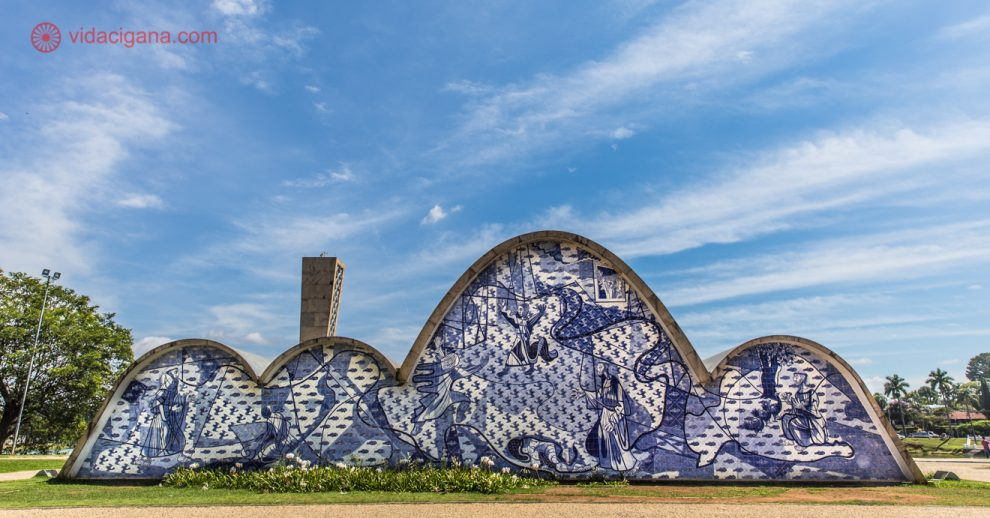
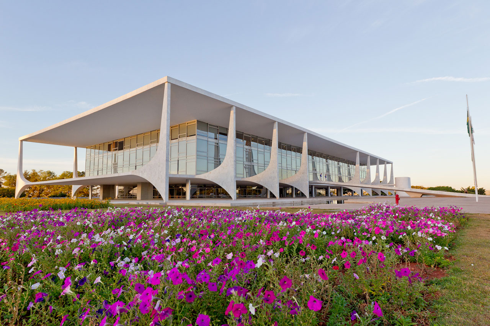

Conjunto arquitetônico da Pampulha

Palácio do Planalto

Catedral de Brasília
Oscar Niemeyer foi um dos principais representantes da arquitetura moderna brasileira e deixou um legado significativo em termos de inovação estética e conceitual. Ele compartilhou da mesma visão de ruptura com os padrões acadêmicos e tradicionais que marcaram a Semana de Arte Moderna.
Suas obras se destacam pela ousadia nas formas curvilíneas, na utilização do concreto armado e na integração entre arquitetura e natureza. Niemeyer buscou criar espaços fluidos, leves e com uma estética futurista, rompendo com a rigidez das linhas retas e incorporando elementos esculturais em seus projetos.
Algumas das obras mais famosas de Oscar Niemeyer incluem o Conjunto Arquitetônico da Pampulha, em Belo Horizonte, que abrange a Igreja de São Francisco de Assis, o Cassino, a Casa do Baile e o Iate Tênis Clube. Outro destaque é a construção de Brasília, a capital federal do Brasil, onde Niemeyer projetou diversos edifícios icônicos, como oPalácio do Planalto, o Congresso Nacional e a Catedral de Brasília.
Niemeyer foi um arquiteto reconhecido internacionalmente, sendo premiado com o Prêmio Pritzker de Arquitetura em 1988. Sua influência e legado são sentidos até os dias de hoje, com suas obras sendo admiradas e estudadas ao redor do mundo.